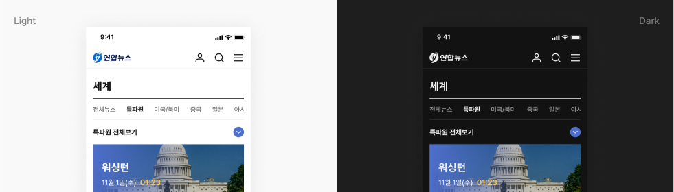
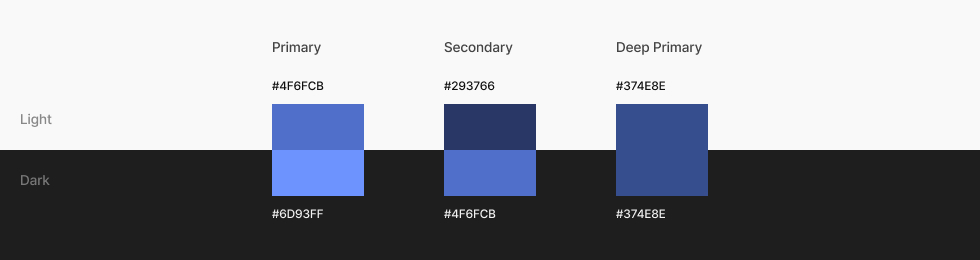
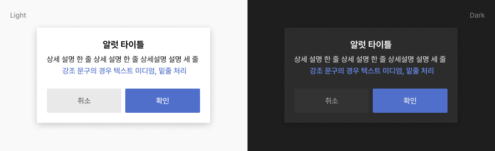

Colors
연합뉴스 웹/앱에서 사용하는 컬러를 정의합니다.
Principle
1. WCAG
연합뉴스 웹/앱에서는 웹 콘텐츠 접근성 지침(WCAG)을 준수한 컬러를 사용합니다.
2. Key colors
연합뉴스 디지털 UI에 최적화한 색상으로 UI 전체에 일관되게 사용합니다.
3. hierarchy
색상은 요소의 위계와 중요도에 따라 사용합니다. 가장 중요한 요소가 가장 눈에 띄어야 합니다.
Light and Dark mode
연합뉴스 컬러 시스템에는 라이트 모드에서 사용하는 라이트 컬러 시스템과 다크모드에서 사용하는 다크 컬러 시스템이 있습니다.

Basic color
Main color
브랜드 컬러를 기반으로 한 메인 컬러입니다. 버튼, 활성 상태와 같은 UI 전체의 주요 구성 요소에 사용됩니다.

Sub color
기능, 강조 등의 목적으로 보조적으로 사용하는 컬러입니다.

Greyscale
회색조 컬러를 정의합니다.

Semantic color
Background
배경색상으로 사용되는 컬러입니다.

Popup box
팝업에 적용하는 배경 컬러입니다.
